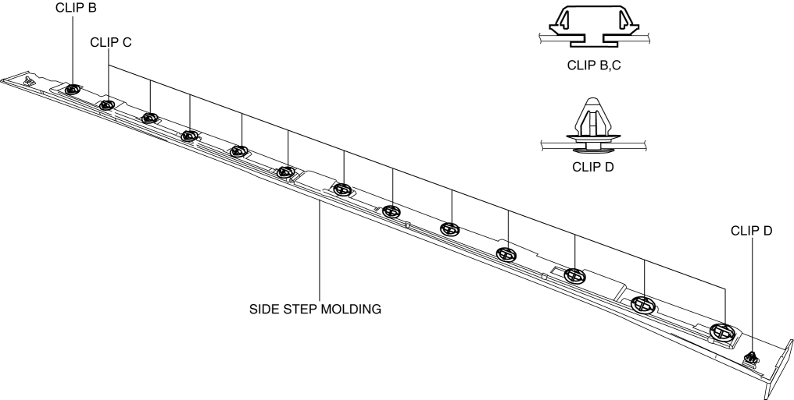

< Previous
Next >
2014 -
Mazda6 -
Body and Accessories
SIDE STEP MOLDING REMOVAL/INSTALLATION
Removal
1. Bend back the mudguard. (See MUDGUARD REMOVAL/INSTALLATION.)
2. Move the side step molding in the direction of arrow (1) shown in the figure and remove clip A from the body while pinching clip A using pliers.
3. Pull the side step molding in the direction of the arrow (2), (3) and remove it while detaching clip B, clips C, and clip D.
4. After removing the side step molding, remove clip B, clips C and clip D from the body using a fastener remover.
Installation
1. Install the clip B, clips C and clip D to the side step molding.

2. Press the side step molding in the direction of arrow (1) shown in the figure and install clip B to the body.
3. Press the side step molding starting from the front of the vehicle and install clips A, C, and D.
4. Install the mudguard. (See MUDGUARD REMOVAL/INSTALLATION.)
< Previous
Next >
© 2012 Mazda North American Operations, U.S.A.